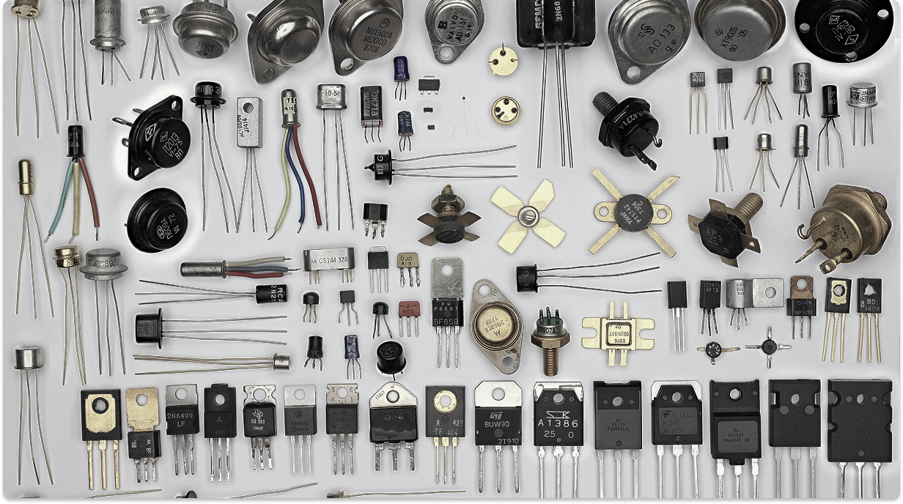

VEJA MAIS...
Louis Pierre Couffignal
Louis Pierre Couffignal foi um matemático e cientista francês, pioneiro na área de cibernética e computação na França.

Placa de Circuito Impresso
A placa de circuito impresso revolucionou a eletrônica ao permitir a montagem compacta, organizada e confiável de componentes eletrônicos.

Transistor
A invenção do transistor permitiu a miniaturização e a eficiência que definem a eletrônica moderna, da lógica digital aos rádios.